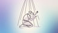
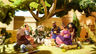

| Title | Verse range | Videos | Greek words | Verses | Relative length |
|---|---|---|---|---|---|
| Sermon on the Mount | 5:1–7:27 | 2000 | 109 | ||
| 0.0 Introduction | 5:1–5:2 | 24 | 2 | ||
| 1.0 Identity | 5:3–5:16 | 191 | 14 | ||
| 1.1 Identity - Good Life (Beatitudes) | 5:3–5:12 | 108 | 10 | ||
| 1.1.1 Social Status | 5:3–5:5 | 26 | 3 | ||
| 1.1.2 Character | 5:6–5:8 | 26 | 3 | ||
| 1.1.3 Conduct (and the first command) | 5:9–5:12 | 56 | 4 | ||
| 1.1.1 (alt) Those in low condition now | 5:3–5:6 | 36 | 4 | ||
| 1.1.2 (alt) Those showing right-relationship now | 5:7–5:10 | 36 | 4 | ||
| 1.1.3 (alt) You! (and the first command) | 5:11–5:12 | 36 | 2 | ||
| 1.2 Identity - Salt | 5:13 | 27 | 1 | ||
| 1.3 Identity - Light (and the second command) | 5:14–5:16 | 56 | 3 | ||
| 2.0 Instruction | 5:17–7:12 | 1502 | 78 | ||
| 2.1 Greater Righteousness | 5:17–5:48 | 628 | 32 | ||
| 2.1.1 Relationship to Torah | 5:17–5:20 | 101 | 4 | ||
| 2.1.2 Case studies: Murder, Adultery, Divorce | 5:21–5:32 | 268 | 12 | ||
| 2.1.2.1 Murder, anger, contempt | 5:21–5:26 | 141 | 6 | ||
| 2.1.2.2 Adultery | 5:27–5:30 | 92 | 4 | ||
| 2.1.2.3 Divorce | 5:31–5:32 | 35 | 2 | ||
| 2.1.3 Case studies: Oaths, Retaliation, Enemies | 5:33–5:48 | 259 | 16 | ||
| 2.1.3.1 Oaths | 5:33–5:37 | 82 | 5 | ||
| 2.1.3.2 Retaliation | 5:38–5:42 | 69 | 5 | ||
| 2.1.3.3 Enemies (be complete) | 5:43–5:48 | 108 | 6 | ||
| 2.2 Religious Practice Motivation | 6:1–6:18 | 359 | 18 | ||
| 2.2.0 Introduction (no reward from your Father) | 6:1 | 27 | 1 | ||
| 2.2.1 Giving in hiddenness | 6:2–6:4 |  | 68 | 3 | |
| 2.2.2 Prayer | 6:5–6:15 | 197 | 11 | ||
| 2.2.2.1 Prayer in hiddenness | 6:5–6:6 | 70 | 2 | ||
| 2.2.2.2 Example of prayer | 6:7–6:15 | 127 | 9 | ||
| 2.2.2.2.1 How to pray | 6:7–6:8 | 32 | 2 | ||
| 2.2.2.2.2 The Lord's Prayer | 6:9–6:13 | 62 | 5 | ||
| 2.2.2.2.3 Important Prayer point | 6:14–6:15 | 33 | 2 | ||
| 2.2.3 Fasting in hiddenness | 6:16–6:18 | 67 | 3 | ||
| 2.3 Trust | 6:19–7:12 | 515 | 28 | ||
| 2.3.1 (A) Trust - With your stuff | 6:19–6:24 | 121 | 6 | ||
| 2.3.1.1 Treasure | 6:19–6:21 | 49 | 3 | ||
| 2.3.1.2 The eye | 6:22–6:23 | 45 | 2 | ||
| 2.3.1.3 Two masters | 6:24 | 27 | 1 | ||
| 2.3.2 (B) Trust - With your worry | 6:25–6:34 | 189 | 10 | ||
| 2.3.2.1 What you eat, drink, and wear | 6:25 | 32 | 1 | ||
| 2.3.2.2 Birds and lilies | 6:26–6:30 | 94 | 5 | ||
| 2.3.2.3 Seek the Kingdom | 6:31–6:34 | 63 | 4 | ||
| 2.3.3 (A') Trust - With your relationships | 7:1–7:6 | 107 | 6 | ||
| 2.3.3.1 Judging | 7:1–7:2 | 18 | 2 | ||
| 2.3.3.2 Speck and plank | 7:3–7:5 | 64 | 3 | ||
| 2.3.3.3 Pearls before pigs | 7:6 | 25 | 1 | ||
| 2.3.4 (B') Trust - With your Father | 7:7–7:11 | 75 | 5 | ||
| 2.3.4.1 Ask, seek, knock | 7:7–7:8 | 24 | 2 | ||
| 2.3.4.2 Bread and fish | 7:9–7:10 | 25 | 2 | ||
| 2.3.4.3 Good gifts | 7:11 | 26 | 1 | ||
| 2.3.5 Trust - Golden Rule | 7:12 | 23 | 1 | ||
| 3.0 Choice | 7:13–7:27 |  | 283 | 15 | |
| 3.1 Choice - Two paths (broad / narrow) | 7:13–7:14 | 44 | 2 | ||
| 3.2 Choice - Illegitimate prophets | 7:15–7:23 | 143 | 9 | ||
| 3.2.1 Two trees known by their fruit | 7:15–7:20 | 77 | 6 | ||
| 3.2.2 I have never known you | 7:21–7:23 | 66 | 3 | ||
| 3.3 Choice - Two houses (Rock / sand) | 7:24–7:27 | 96 | 4 |